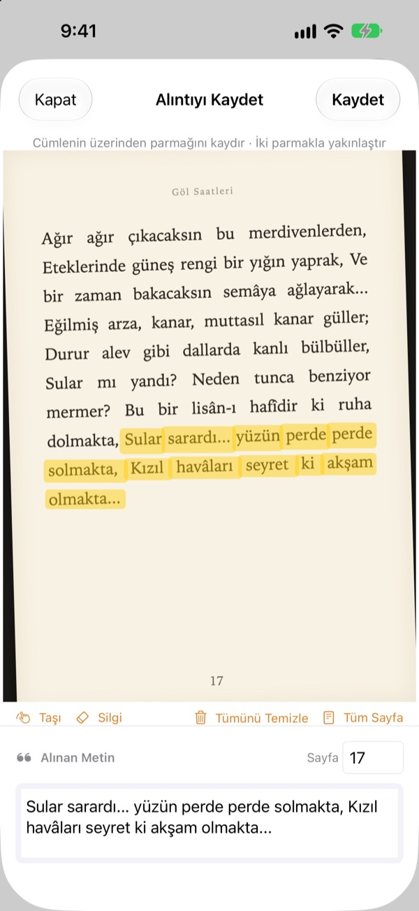
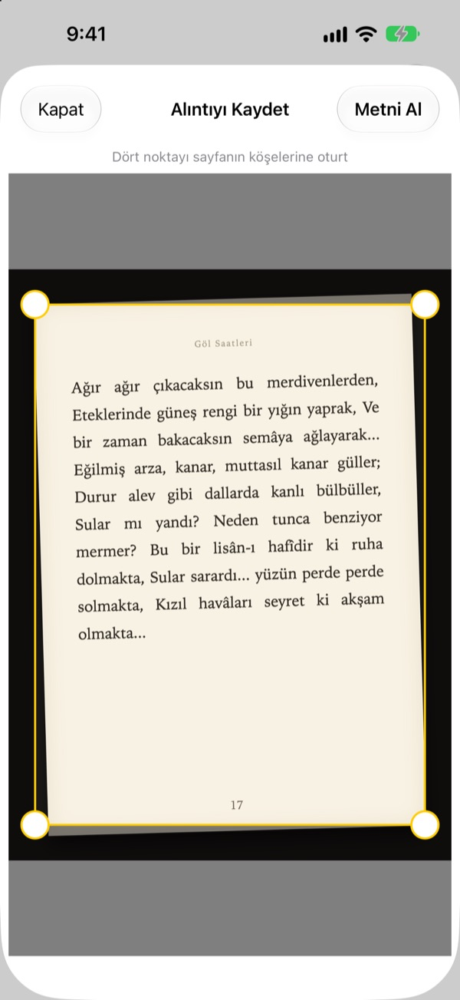
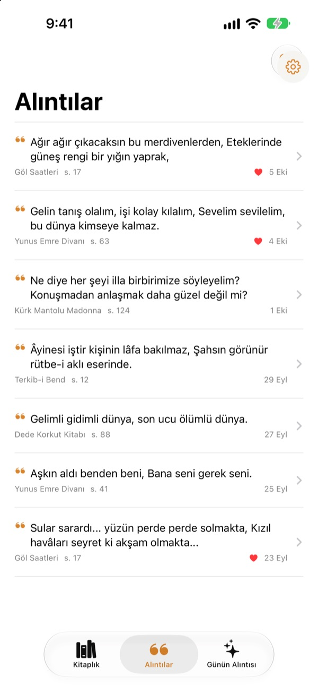
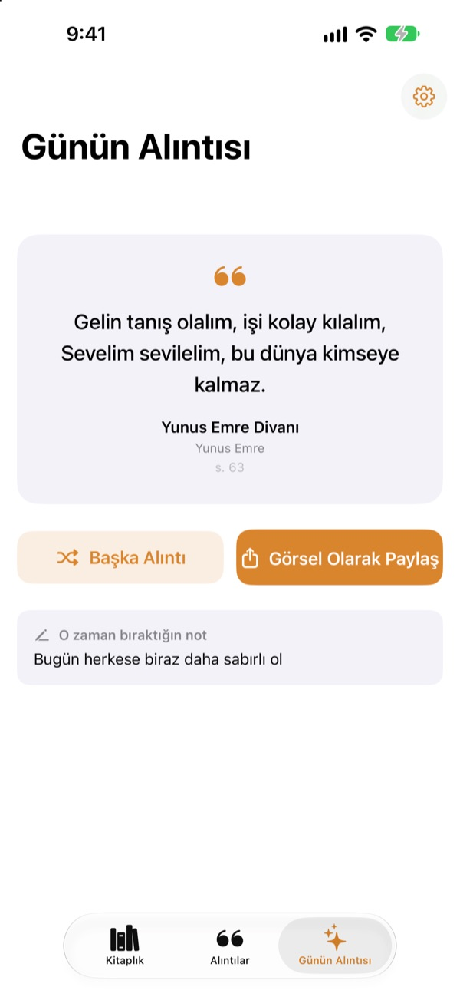

Kalemsiz
altını çiz
Sayfanın fotoğrafını çek, sevdiğin cümlenin üzerinde parmağını gezdir; yalnızca o cümle metin olarak kaydedilir. Kitap ve sayfa numarası da onunla gelir.
Tüm özellikler ücretsiz, reklam yok.

Bir dene
Aşağıdaki sayfada istediğin cümlenin üzerinde parmağını ya da fareni gezdir. Karta yalnızca üzerinden geçtiğin kelimeler düşer.
Güzel cümleler nerede kayboluyor?
Kitap kütüphaneden, üzerine bir şey yazamazsın. Sayfanın fotoğrafı arşivindeki binlerce fotoğrafın arasında kaybolur. Not uygulamasına yazarsan da kitap adı ve sayfa numarası çoğu zaman eksik kalır. Bookmark Shot cümleyi, kitabı ve sayfayı iki hareketle saklar: çek, sonra parmağını gezdir.
Eğri fotoğraf, düz sayfa
Fotoğrafı çektikten sonra dört köşeyi oturt; eğik çekilmiş bir sayfa bile kâğıt gibi düzleşir. Harfler netleştikçe tanıma da iyileşir.
Arşivindeki fotoğraflar da olur.

Tüm alıntıların tek yerde
Kitapların kapaklarıyla bir kitaplıkta, alıntıların tek bir listede toplanır. Cümleye, nota ya da kitap adına göre ara; yeniden okumak istediklerini kalple işaretle.
Tek bir kapak fotoğrafıyla kitap ekle. Başlık ve yazar senin için okunur, arka kapaktaki barkod da karedeyse ISBN de.

Unuttuğun cümlelerle yeniden karşılaş
Günün alıntısı her gün kaydettiğin alıntılardan birini, bıraktığın notla birlikte geri getirir. Bir widget ile Ana Ekran’da ya da Kilitli Ekran’da tut.
Beğendin mi? Kâğıt görünümlü bir karta dönüştürüp paylaş.

Üç adımda başla
- 1
Kapağı çek
Başlık ve yazar doldurulur. Kaydetmeden önce düzenleyebilirsin.
- 2
Sayfayı çek
Dört köşeyi oturt, sayfa düzleşsin.
- 3
Cümlenin üzerinden geç
Sayfa numarası bulunur ve cümleyle birlikte kaydedilir.
Altını çizme ekranındaki araçlar
- Parmağını gezdir
- yalnızca üzerinden geçtiğin kelimeleri seçer
- İki parmakla yakınlaştır
- daha hassas seçim için büyütür
- Kaydır
- büyütülmüş sayfayı hareket ettirir
- Silgi
- seçilen kelimeleri geri çıkarır
- Tümünü Temizle
- tüm seçili kelimeleri kaldırır
- Tüm Sayfa
- sayfadaki tüm metni alır
- Sayfa alanı
- bulunan sayfa numarası, düzenlenebilir
VoiceOver açıkken bir satırı eklemek ya da çıkarmak için iki kez dokun.
Tüm özellikler ücretsiz
Ücretsiz
- Kapaktan kitap ekleme, barkoddan ISBN
- Sayfa düzleştirme ve parmakla altını çizme
- Otomatik sayfa numarası
- Kitaplık, alıntı arama ve favoriler
- Ana Ekran ve Kilitli Ekran widget’larıyla Günün alıntısı
- Kart görseli olarak paylaşma
- iCloud ile eşitleme
Geliştiriciye destek ol
- İstersen Ayarlar’dan küçük bir bahşiş bırakabilirsin
- Bahşiş hiçbir şeyin kilidini açmaz. Uygulama her durumda aynıdır
Reklam yok, abonelik yok.
Sorular
Fotoğraflarım ya da alıntılarım bir yere gönderiliyor mu?
Hayır. Metin tanıma tamamen cihazında Apple Vision ile yapılır; fotoğrafların ve alıntıların asla bir sunucuya gitmez. İnternet olmadan da çalışır. Ayrıntılar için aşağıdaki Gizlilik Politikası’na bakabilirsin.
Hangi dilleri okuyabiliyor?
Metni cihazında iOS tanır. Korece, İngilizce, Japonca, Çince, Rusça ve Batı Avrupa dillerinin çoğundaki kitapları okur; yeni iOS sürümlerinde Tayca, Vietnamca, Türkçe, Endonezce, Lehçe, Çekçe, Felemenkçe ve İskandinav dillerini de tanır. Yunanca henüz tanınamıyor.
Yalnızca istediğim cümleyi nasıl seçerim?
Sayfanın fotoğrafını çektikten sonra fosforlu kalem kullanır gibi parmağını cümlenin üzerinde gezdir, yalnızca o kelimeler seçilir. Daha hassas olmak için iki parmakla yakınlaştır. Silgi, Tümünü Temizle ve Tüm Sayfa da var.
Başlık veya yazar yanlış çıktı.
Kapak tanıma, yazıların büyüklüğüne bakarak tahmin yürütür; bu yüzden çok süslü kapaklarda yanılabilir. Kitabı kaydetmeden önce başlığı ve yazarı düzeltebilirsin.
Sayfa numarası yanlış.
Fotoğrafın kenarındaki rakamlardan okunur. Kaydetmeden önce sayfa alanında düzeltmen yeterli.
Alıntılarımı birden fazla cihazda görebilir miyim?
Evet. Aynı Apple Hesabı ile iCloud’a giriş yaptıysan ve iCloud Drive açıksa, kitapların ve alıntıların otomatik olarak eşitlenir.
Widget’ı nasıl eklerim?
Ana Ekran’a dokunup basılı tut, Düzenle > Widget Ekle’ye dokun ve Bookmark Shot’ı seç. Kilitli Ekran için ekrana dokunup basılı tut, ardından Özelleştir’e dokun. Günün alıntısı orada görünür.
Kamera çalışmıyor.
Ayarlar > Bookmark Shot bölümünde kameraya ve fotoğraflara erişime izin verildiğinden emin ol. Fotoğraf çekmek için gerçek bir iPhone gerekir.
Neye ihtiyacım var?
iOS 17.0 veya üstü yüklü bir iPhone.
Size nasıl ulaşabilirim?
Uygulamanın Ayarlar (dişli) ekranından geri bildirim gönder ya da aşağıdaki adrese e-posta at. Genellikle iki üç gün içinde yanıt veririz.
Soruların ya da önerilerin mi var? leeo@kakao.com adresine yaz.